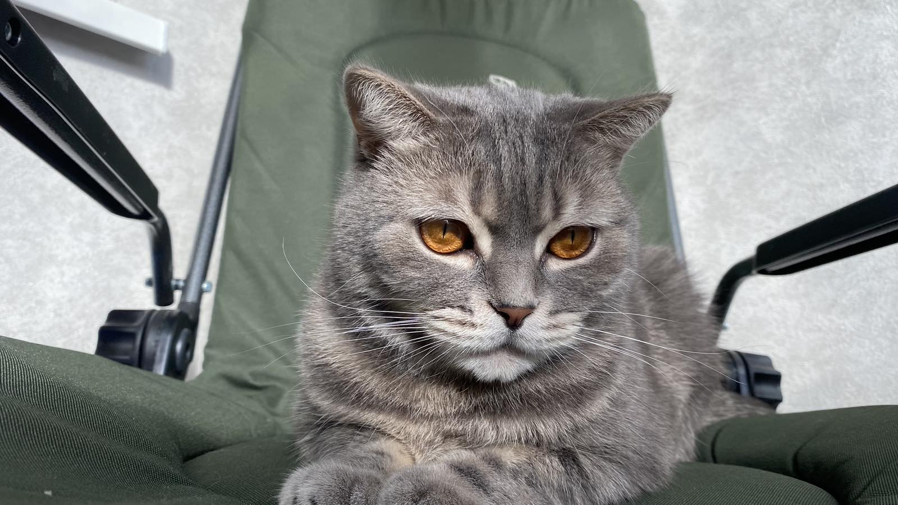

My cat Lex

| Date of birth |
30.09.2016 |
| Breed |
scotish straight |
| Color |
grey |
Scottish Straight
Scottish Straights are gentle, calm cats with characteristically round faces. Their sweet,
friendly nature and low-key attitude make them an excellent fit for most families.
General Appearance
Scottish Straights are medium-sized cats with an overall round appearance. They retain a sweet, kitten-like disposition throughout their lives.
Coat and Coloring
Scottish Straights come in both shorthair and longhair varieties. Shorthairs have dense, plush hair that stands away from the body, whereas longhairs have full coats with
notable britches, tail plumes, toe tufts, and ear furnishings. Their coats come in nearly all colors and patterns.
Distinctive Physical Traits
Scottish Straights have rounded heads, adorable, wide-open eyes, and broad, short noses. Their ears are small-to-medium with rounded tips. And they have rounded,
well-padded bodies and medium-to-long tails that are flexible and tapering.
You can also visit: